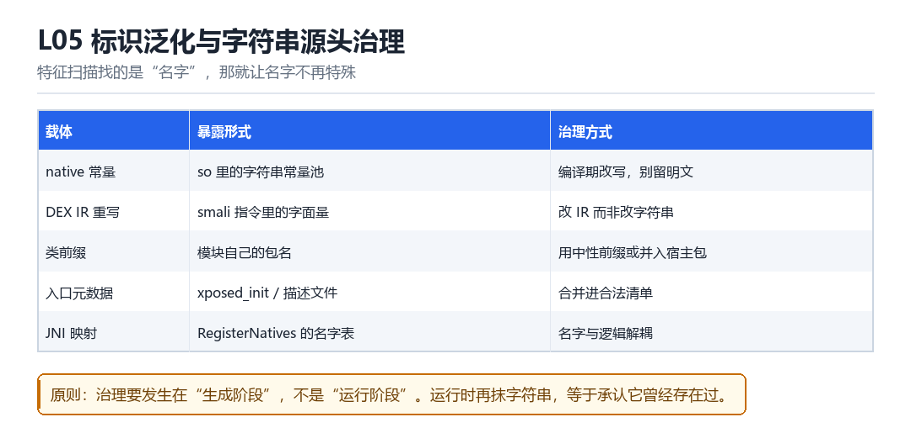

标识泛化与字符串源头治理
native 编译期常量、DEX IR 重写、类前缀、模块入口元数据、JNI 映射
特征扫描找的是“名字”，那就让名字不再特殊。

5.1 五种载体
| 载体 | 暴露形式 | 治理方式 |
|---|---|---|
| native 常量 | so 的字符串常量池 | 编译期改写 |
| DEX IR | smali 里的字面量 | 改 IR 而不是改字符串 |
| 类前缀 | 模块自己的包名 | 中性前缀或并入宿主包 |
| 入口元数据 | xposed_init 等描述文件 | 合并进合法清单 |
| JNI 映射 | RegisterNatives 的名字表 | 名字与逻辑解耦 |
5.2 为什么要在“生成阶段”治理
运行时再抹字符串，等于承认它曾经存在过——内存扫描、堆转储、甚至崩溃日志都可能留下痕迹。正确的做法是在编译 / 打包阶段就不产生这些特征。
5.3 一个具体的例子
# 弱：运行时把 "lsposed" 替换成 "system"
# 强：编译期就不出现这个常量，用枚举值 + 间接表代替
enum { K_A = 1, K_B = 2 }; // 语义用枚举承载
static const char* table[] = { ... }; // 名字延迟绑定5.4 本章自测
- 五种载体里，哪一种最难治理？
- 为什么运行时抹字符串是下策？
- 枚举值 + 间接表怎么替代字符串常量？
- 标识泛化与混淆的关系是什么？
5.5 深入：为什么“改 IR”比“改字符串”彻底
字符串常量在 dex 里是集中存放的，改它只是“换了个字”，结构还在；而改 IR（把 const-string 换成计算出来的值）会让“这里原本有个字符串”这个事实消失。
| 做法 | 产物里是否留下字符串 | 被扫描到的可能 |
|---|---|---|
| 改字符串内容 | 留（只是换了值） | 高 |
| 改 IR 为计算 | 不留 | 低 |
| 改为从资源读取 | 留 key | 中 |
5.6 实战：用 smali 层面做最小改动
const-string v0, "lsposed"
invoke-static {v0}, Lx/Y;->log(Ljava/lang/String;)Vconst-string v0, "lsp"
const-string v1, "osed"
invoke-virtual {v0, v1}, Ljava/lang/String;->concat(Ljava/lang/String;)Ljava/lang/String;
move-result-object v0
invoke-static {v0}, Lx/Y;->log(Ljava/lang/String;)V5.7 原理推演：为什么“字符串”是最难治理的载体
因为字符串会出现在太多地方：dex 常量池、so 的 .rodata、资源文件、日志、甚至崩溃栈里。只要它在任何一个地方以明文出现，就可能被抓到。
| 载体 | 明文可能性 | 治理难度 |
|---|---|---|
| dex 常量池 | 高 | 中（可改 IR） |
| so .rodata | 高 | 中（编译期处理） |
| 资源文件 | 中 | 低 |
| 运行时内存 | 必然 | 高（无法彻底消除） |
所以“治理”的目标不是“完全没有”，而是“没有稳定的、可被规则匹配的形态”。
5.8 数据细节：三种字符串隐藏方式的对比
| 方式 | 静态可见 | 运行时可见 | 成本 |
|---|---|---|---|
| 明文 | 是 | 是 | 0 |
| 拆分拼接 | 部分 | 是 | 低 |
| 加密后解密 | 否 | 是（解密后） | 中 |
5.9 深入：类前缀为什么也算“标识”
因为 dex 里的类名会以字符串形式存在。Lcom/lsposed/api/XposedBridge; 这样的类名，本身就是一条“明文特征”——即使用户看不到，扫描器能看到。
| 层面 | 暴露形式 | 处理 |
|---|---|---|
| 类名 | dex 字符串常量 | 改前缀或混淆 |
| 方法名 | dex 字符串常量 | 同上 |
| 字段名 | dex 字符串常量 | 同上 |
所以“标识泛化”不只是“改模块名”，而是“让所有出现在 dex 里的名字都不带特征”。
5.10 深入：JNI 映射的名字表
用 RegisterNatives 注册时，名字是“运行时字符串”。它不一定出现在 dex 里，但会出现在 so 的常量池里。所以“改了 dex 没改 so”仍然会露。
// 1. 静态注册（按命名约定）
Java_com_x_Y_nativeMethod
// 2. 动态注册（RegisterNatives）
// 名字在结构体里，仍在 so 的常量池5.11 实战：一次静态扫描的自查
strings libyour.so | grep -i -E 'lsposed|xposed|frida|gum'
grep -r 'lsposed' smali/ | head
# 有输出 = 还有明文特征检测库在 .rodata 里翻到了一个名字
libshield.so 被加载后做的第一件事不是查内存，而是拿一张关键词表在自己的只读数据段和 /proc/self/maps 上扫一遍：lsposed、xposed、de.robv、lspd.dex、xposed_init。它甚至不需要知道框架有没有运行——只要这个字符串曾经被编译进产物，或者 AndroidManifest.xml 里还留着 xposedmodule 这个 meta-data，就足够给出一个布尔值。名字是最便宜的特征，所以也是最先被用滥的特征。
很多人的第一反应是'运行时把字符串抹掉'。但那等于承认它曾经存在：DEX 的 string_ids 已经排好序、CRC 已经算过，maps 里的文件页可以被 mincore/堆转储抓住，崩溃日志里的常量池还留着一份。治名字要治在它出生之前——在编译、打包、生成 smali 这些阶段，就让那个字面量压根不出现。
五处会留下名字的地方
- native 编译器 → .rodata：C/C++ 里的字面量进只读数据段，
strings lib.so一秒看光；结果是哪怕代码路径永远不执行，名字也躺在文件里。 - DEX 编译器 → string_ids：smali 的
const-string把字面量登记进全局字符串表；结果是改一处引用要连带改索引、排序与校验和，硬改字符串反而制造新差分。 - 类名 → 包前缀：
org.lsposed.*、de.robv.android.xposed.*这类前缀在反射枚举、栈回溯、类加载日志里反复出现；结果是类名本身就是签名。 - 打包器 → 入口元数据：
assets/xposed_init与清单里的xposedmodule/xposedminversionmeta-data；结果是aapt dump xmltree不用解包 dex 就能认出来。 - JNI → RegisterNatives 名字表：
JNINativeMethod里的name/signature是编译期常量；结果是dlsym与动态注册表都能查到对应关系。
五处的共同点是都发生在运行之前。所以治理手段不该是'擦除'，而是'替换承载方式'：语义用枚举或哈希承载，名字在需要时才由间接表拼出来，入口描述合并进合法清单项，JNI 名字与逻辑彻底解耦。改的是结构，不是字面。
把治理提前到生成阶段
- native 侧把
static const char* TAG = 'lsposed'换成enum { K_BRIDGE = 0x5a3c }，需要字符串时经constexpr异或表在编译期还原——产物里不出现原字面量。 - DEX 侧在 IR 重写阶段把
const-string改成'字符数组 +new String'，或直接删掉该常量并改用方法索引分派；注意同步重算string_ids排序与 DEX 校验和。 - 类前缀用 R8/ProGuard 的
-adaptclassstrings与重命名规则一并改掉，别只改类名忘了改Class.forName里的字面量。 - 入口元数据并进合法的
assets配置项，去掉专用文件名；清单里专用 meta-data 改为通用键值。 RegisterNatives的name用运行时拼接生成，让名字表与逻辑函数之间不存在静态对应。- 最后跑一次全量扫描：so、dex、smali、manifest、resources 五处一起搜，任何一处命中都算回归失败。
第 2 步最容易被做错。有人只把 const-string 的内容换掉，却忘了 DEX 的 string_ids 必须按 UTF-16 码点排序、且 map_off 与 Adler32 校验和随之变化。结果名字是没了，但字符串表的顺序和 CRC 变成了一个更稳定的新指纹。改 IR 要连着改元数据，这是'源头治理'与'运行时打补丁'的分水岭。
可复现：把 APK 与 so 拆开搜一遍
# 1. native 常量：应无输出；有一行就算治理失败
strings -a lib/arm64-v8a/libbridge.so | grep -iE 'lsposed|xposed|lspd'
# 2. smali 里的字面量与类名前缀
grep -rniE 'lsposed|xposed_init|de/robv' smali/ || echo clean
# 3. DEX 字符串表（改 IR 后要连排序一起验）
dexdump -f classes.dex | grep -iE 'lsposed|xposed' || echo clean
# 4. 清单里的专用 meta-data
aapt dump xmltree app.apk AndroidManifest.xml | grep -i xposed || echo clean
# 5. JNI 名字表与导出符号
readelf -Ws lib/arm64-v8a/libbridge.so | grep -iE 'lsp|xposed' || echo clean
# 6. 对照：治理前的产物留一份，确认上面五条当时都能命中看到什么算成功：五条命令全部输出 clean（或无匹配），且第 6 步的治理前产物五条都能命中——这说明扫描器本身是有效的，不是 grep 写错了。看到什么算失败：strings 干净了，但 dexdump 或 xmltree 还命中，说明治理只做了一层；或者五条全干净、APK 却启动即INSTALL_FAILED_INVALID_APK，那是改 string_ids 时没重算校验和。把这条脚本塞进 CI，每次打包自动跑，比事后人工翻产物体感可靠得多。
| 载体 | 暴露位置 | 源头治理手段 | 只改字面的残余风险 |
|---|---|---|---|
| native 常量 | .rodata / 符号表 | 枚举 + constexpr 异或表 | 异或表本身成新特征 |
| DEX 字面量 | string_ids / const-string | 改 IR 并重算排序与校验和 | CRC 与 map_off 变化 |
| 类前缀 | 类名、栈、反射结果 | 重命名 + adaptclassstrings | 字符串引用未同步改名 |
| 入口元数据 | assets / manifest | 并入通用配置项 | 专用键名残留 |
| JNI 名字表 | JNINativeMethod / dlsym | 运行时拼接、名字与逻辑解耦 | 拼接算法可被复现 |
把这张表与第三部 F11 的隐藏与兼容处理总表对读，会发现 F11 处理的是'运行时的痕迹'，本章处理的是'编译期的痕迹'，两者拼起来才是完整的一条产物流。第二部 K04 讲 inode 与 back-file 时提到的'文件页可被反复观测'，解释了为什么 file-backed 的字符串擦不掉；训练营 T01 让学员先造一道关键词检测再绕过它，绕过之后回头跑本章第 6 步的对照，才会真正明白什么叫'治在出生之前'。